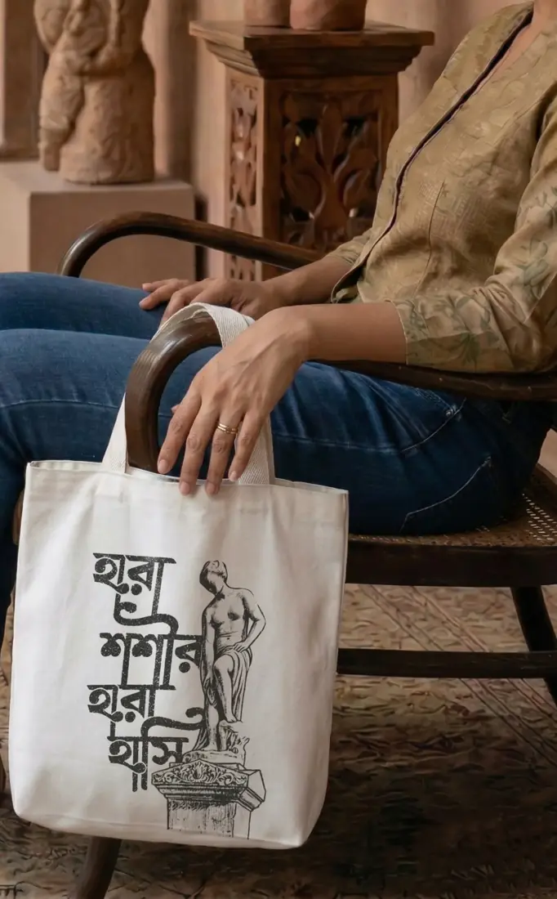
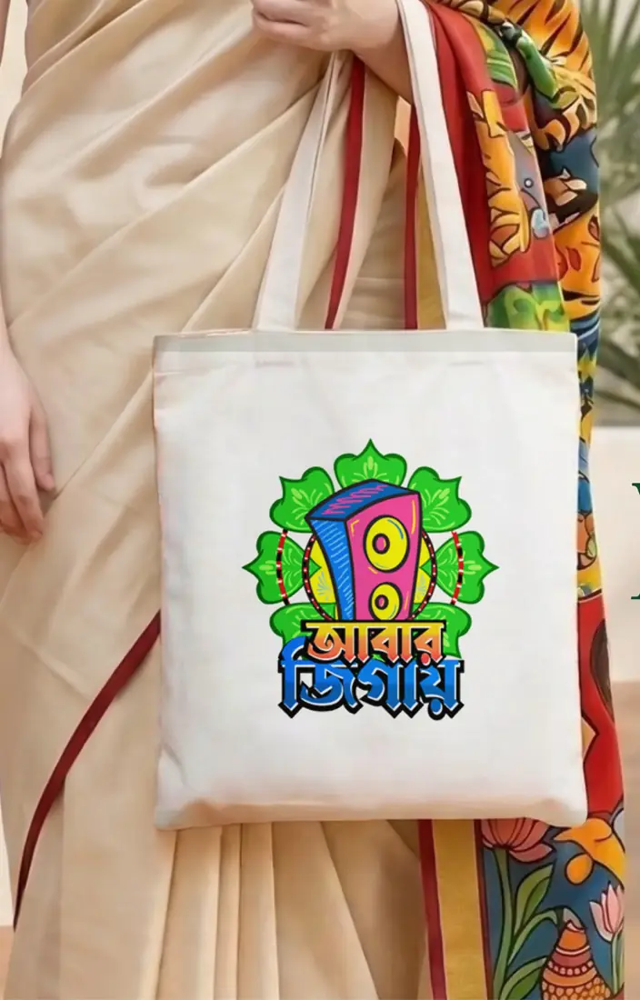
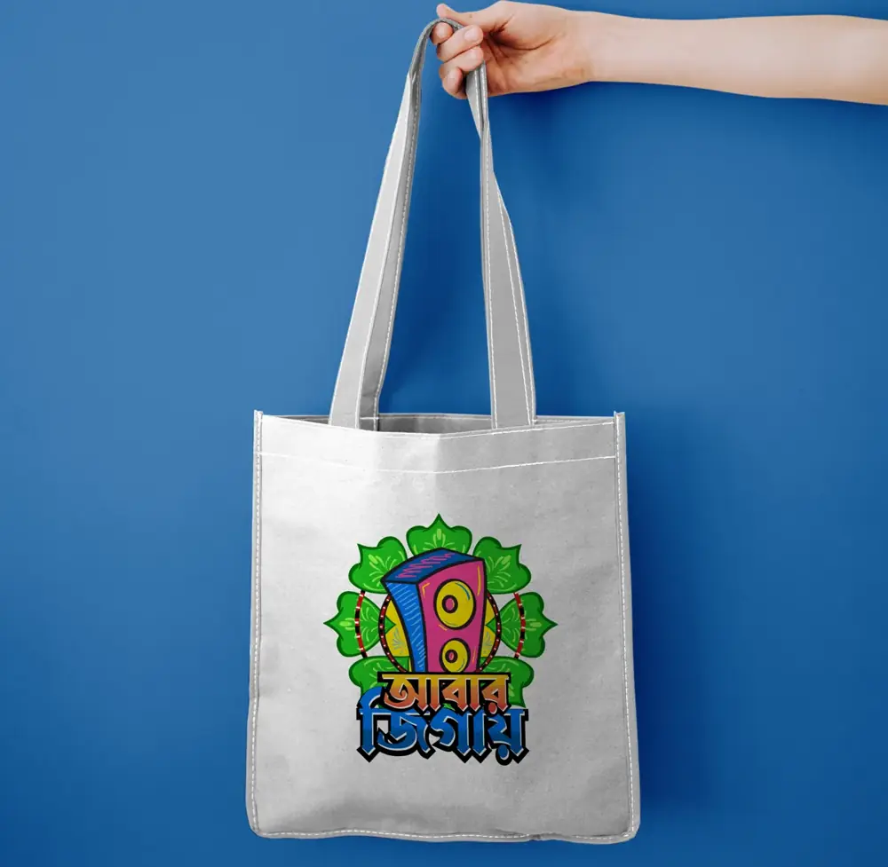

Some bags hold things.Ours hold stories.



Point at a title to see its bag.
তরী, toree, is an old Bangla word for a boat. A boat carries people home. Our bags carry something too: the places, the poems and the people of Bangladesh.
Every Toree design begins with a story worth keeping. We research it, draw it and print it on canvas made for everyday life, so history travels with you instead of staying behind glass.
Read the story,
then choose the bag.
Three designs, three chapters of Bangladesh. Each bag is the last page of its story.

হারা শশীর হারা হাসিHara Shoshir Hara Hashi
In August 2024, a marble woman was broken in a garden in Mymensingh. A century earlier, a poet had already written her return.
Read the story
বিদ্রোহী প্রকৃতিকন্যাBidrohi Prokritikonna
In March 1971, a university built to grow food closed its gates and sent its people to grow a country.
Read the story
আবার জিগায়Abar Jigay
In Dhaka, the answer to every invitation is a question. And it always means yes.
Read the storyA palace, a campus, a city.
One country.
All three are printed on the same heavy white canvas, so the story is what sets them apart.

Made to be carried for years.
A story is only worth carrying if the bag lasts. Ours are cut from heavy cotton canvas, stitched to take a full day’s weight and printed to stay bright long after the first wash.
We field-tested them in Naikhongchhari, Bandarban: monsoon rain, mud, earthen floors, then forty-eight hours soaking in strong detergent. They came back with no loose threads, no torn seams and zippers like new.
- 300 GSM cotton canvas
- Premium, heavy cotton, made for daily use and years of it.
- 15 × 14 inches
- Room for books, a laptop and the day’s essentials. 25-inch handles.
- A pocket that closes
- A secure inner pocket with a durable metal zipper.
- Prints that stay
- Colours that come back bright after hard washing.
Choose your story.
We’ll make it yours.
Toree bags are made in small batches. To order, send us a message on Facebook with the story you want to carry.